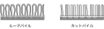

2024年
問題151 繊維床材の特徴と維持管理に関する次の記述のうち，最も不適当なものはどれか．
（1）ポリプロピレン素材は，復元力に乏しいが，親水性の汚れがしみになりにくい．
（2）ウール素材は，耐久性が高いが，親水性の汚れがしみになりやすい．
（3）しみ取り作業は，定期清掃で行う．
（4）繊維床材は，パイルの空隙に土砂やほこりが堆積しやすい．
（5）パイル表面の粗ごみの除去には，カーペットスイーパを用いる．
2024年
問題151 正解（3） 頻出度AAA
しみ（染み）は，液体の異物が時間の経過により染着したものであるから，日常清掃で，染着する前にできるだけ速やかに拭取ることが望ましい．事務所建築物の繊維床材では，60%以上が親水性のしみである．
-(1) ，-(2) 繊維床の素材については2024-151-1表参照．
2024-151-1表 カーペットパイルの素材
| 種類 | 染色性 | 耐久性 | 汚れ除去性 | 含水率 | 色素の沈着 | |
| 天然繊維 | ウール | 最上 | 大 | 親水性の汚れは取りにくい | 15 | 大 |
| 合成繊維 | ナイロン | 中 | 大 | 中間的な性質を示す | 5 | 中 |
| アクリル | 上 | 小 | 親水性の汚れは取れやすい | 0 | 無 （構造上） |
|
| ポリエステル | 上 | 中 | 親水性の汚れは比較的取れやすい | 0.5 | 無 （構造上） |
|
| ポリプロピレン | 下 | 復元力が乏しい | 親水性の汚れは取れやすい | 0 | 無 （成分上） |
|
-(4) ，-(5) のカーペットのパイルとはカーペットの表面にある毛足のこと．パイルには大きくわけて，ループパイル（毛先が輪になっている）とカットパイル（毛先が切り揃えてある）がある（2024-151-1図参照）．
